CHARACTERISTIC FUNCTIONS OF SELECTED DISCRETE (FREQUENCY) DISTRIBUTIONS
(c) 2016 Viktor Witkovsky, witkovsky@gmail.com Version: 15-Nov-2016
Contents
- BINOMIAL DISTIBUTION
- II.1.a EXAMPLE: CF of the Binomial distribution with n = 25, p = 0.3
- II.1.b EXAMPLE: CF of the compound Binomial-Exponential distribution
- II.1.c EXAMPLE: PDF/CDF of the compound Binomial-Exponential distribution
- DELAPORTE DISTRIBUTION
- II.2.a. EXAMPLE: CF of the Delaporte distribution with a=2.2, b=3.3, c=4
- II.2.b EXAMPLE: CF of the compound Delaport-Exponential distribution
- II.2.c EXAMPLE: PDF/CDF of the compound Delaport-Exponential distribution
- GENERALIZED POISSON DISTRIBUTION
- II.3.a EXAMPLE: CF of the GeneralizedPoisson distribution, a=10, p=0.5
- II.3.b EXAMPLE: CF compound GeneralizedPoisson-Exponential distribution
- II.3.c EXAMPLE: PDF/CDF of the compound GeneralizedPoisson-Exponential distribution
- NEGATIVE BINOMIAL DISTRIBUTION
- II.4.a EXAMPLE: CF of the NegativeBinomial distribution, r = 5, p = 0.3
- II.4.b EXAMPLE: PDF/CDF of the compound NegativeBinomial-Exponential distribution
- POISSON DISTRIBUTION
- II.5.a EXAMPLE: CF of the Poisson distribution with lambda = 10
- II.5.b EXAMPLE: CF compound Poisson & Exponential distribution
- II.5.c EXAMPLE: PDF/CDF of the compound Poisson-Exponential distribution
- POLYA-EGGENBERGER DISTRIBUTION
- II.6.a EXAMPLE: CF of PolyaEggenberger distribution, a=2.2, b=3.3, m=4
- II.6.b EXAMPLE: CF of the compound PolyaEggenberger-Exponential distribution
- II.6.c EXAMPLE: PDF/CDF of the compound PolyaEggenberger-Exponential distribution
- QUINKERT DISTRIBUTION
- II.7.a EXAMPLE: CF of the Quinkert distribution with a=3, b=5
- II.7.b EXAMPLE: CF of the compound Quinkert-Exponential distribution
- II.7.c EXAMPLE: PDF/CDF of the compound Quinkert-Exponential distribution
- WARING DISTRIBUTION
- II.8.a EXAMPLE: CF of the Waring distribution, a = 2.2, b = 3.3, r = 4
- II.8.b EXAMPLE: CF of the compound Waring-Exponential distribution
- II.8.c EXAMPLE: PDF/CDF of the compound Waring-Exponential distribution
BINOMIAL DISTIBUTION
cfN_Binomial(t,n,p) evaluates the characteristic function cf(t) of the Binomial distribution with the parameters n (number of trials, n in N) and p (success probability, p in [0,1]), i.e.
cf(t) = cfN_Binomial(t,n,p) = (1 - p + p*e^(1i*t))^n
For more details see WIMMER and ALTMANN (1999), also WIKIPEDIA: https://en.wikipedia.org/wiki/Binomial_distribution
cfN_Binomial(t,n,p,cfX) evaluates the compound characteristic function:
cf(t) = cfN_Binomial(-1i*log(cfX(t)),n,p),
where cfX is function handle of the characteristic function cfX(t) of a continuous distribution and/or random variable X.
Note that such CF is characteristic function of the compound distribution, i.e. distribution of the random variable Y = X_1 + ... + X_N, where X_i ~ F_X are i.i.d. random variables with common CF cfX(t), and N ~ F_N is independent RV with its CF given by cfN(t).
SYNTAX:
- cf = cfN_Binomial(t,n,p)
- cf = cfN_Binomial(t,n,p,cf_X)
clear
close all
II.1.a EXAMPLE: CF of the Binomial distribution with n = 25, p = 0.3
n = 25; p = 0.3; t = linspace(-15,15,1001); cf = cfN_Binomial(t,n,p); figure; plot(t,real(cf),t,imag(cf)),grid title('CF the Binomial distribution with n = 25, p = 0.3') xlabel('t') ylabel('cf(t)')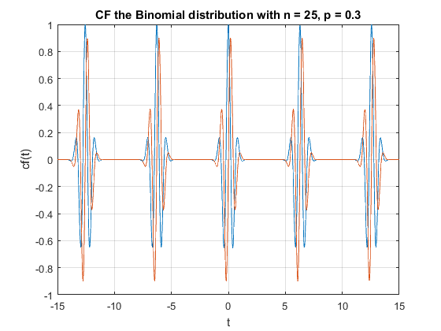
II.1.b EXAMPLE: CF of the compound Binomial-Exponential distribution
n = 25;
p = 0.3;
lambda = 10;
cfX = @(t) cfX_Exponential(t,lambda);
t = linspace(-10,10,501);
cf = cfN_Binomial(t,n,p,cfX);
figure; plot(t,real(cf),t,imag(cf)),grid
title('CF of the compound Binomial-Exponential distribution')
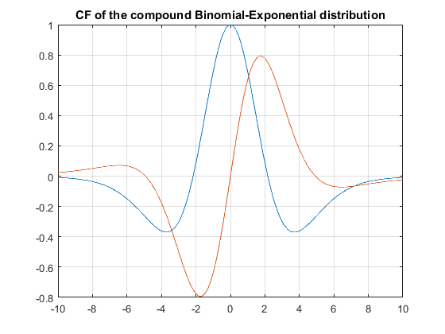 II.1.c EXAMPLE: PDF/CDF of the compound Binomial-Exponential distribution
n = 25;
p = 0.3;
lambda = 5;
cfX = @(t) cfX_Exponential(t,lambda);
cf = @(t) cfN_Binomial(t,n,p,cfX);
x = linspace(0,5,101);
prob = [0.9 0.95 0.99];
clear options
options.isCompound = true;
result = cf2DistGP(cf,x,prob,options);
disp(result)
x: [1×101 double]
cdf: [1×101 double]
pdf: [1×101 double]
prob: [0.9000 0.9500 0.9900]
qf: [2.4571 2.8049 3.5196]
SixSigmaRule: 10
N: 16384
dt: 0.7272
T: 1.1915e+04
PrecisionCrit: 2.5307e-11
myPrecisionCrit: 1.0000e-12
isPrecisionOK: 0
xMean: 1.5002
xStd: 0.7140
xMin: 0
xMax: 8.6400
cf: @(t)cfN_Binomial(t,n,p,cfX)
const: 1.3411e-04
isCompound: 1
isCircular: 0
details: [1×1 struct]
options: [1×1 struct]
tictoc: 0.0033
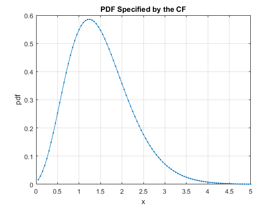 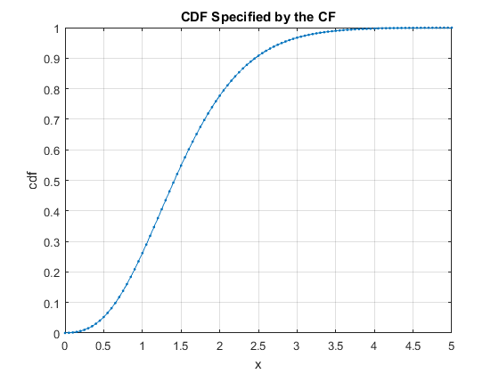 DELAPORTE DISTRIBUTION
cfN_Delaporte(t,a,b,c) evaluates the characteristic function cf(t) of the Delaporte distribution with the parameters a (parameter of variable mean, a > 0), b (parameter of variable mean, b > 0 ), and c (fixed mean, c > 0), i.e.
cf(t) = cfN_Binomial(t,n,p) = (1 - p + p*e^(1i*t))^n = (b/(1+b))^a * (1-e^(1i*t)/(b+1))^(-a) * exp(-c*(1-e^(1i*t)));
For more details see WIMMER and ALTMANN (1999), also WIKIPEDIA: https://en.wikipedia.org/wiki/Delaporte_distribution
SYNTAX:
- cf = cfN_Delaporte(t,a,b,c)
- cf = cfN_Delaporte(t,a,b,c,cfX)
II.2.a. EXAMPLE: CF of the Delaporte distribution with a=2.2, b=3.3, c=4
a = 2.2;
b = 3.3;
c = 4;
t = linspace(-15,15,1001);
cf = cfN_Delaporte(t,a,b,c);
figure; plot(t,real(cf),t,imag(cf)),grid
title('CF of the Delaporte distribution with a=2.2, b=3.3, c=4')
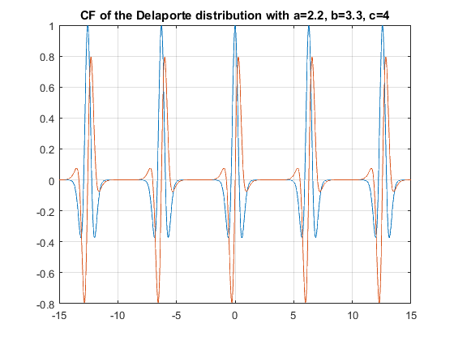 II.2.b EXAMPLE: CF of the compound Delaport-Exponential distribution
a = 2.2;
b = 3.3;
c = 4;
lambda = 10;
cfX = @(t) cfX_Exponential(t,lambda);
t = linspace(-10,10,501);
cf = cfN_Delaporte(t,a,b,c,cfX);
figure; plot(t,real(cf),t,imag(cf)),grid
title('CF of the compound Delaport-Exponential distribution')
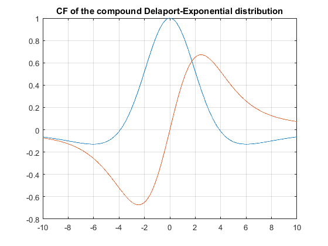 II.2.c EXAMPLE: PDF/CDF of the compound Delaport-Exponential distribution
a = 2.2;
b = 3.3;
c = 4;
lambda = 5;
cfX = @(t) cfX_Exponential(t,lambda);
cf = @(t) cfN_Delaporte(t,a,b,c,cfX);
x = linspace(0,4,101);
prob = [0.9 0.95 0.99];
clear options
options.isCompound = true;
result = cf2DistGP(cf,x,prob,options);
disp(result)
x: [1×101 double]
cdf: [1×101 double]
pdf: [1×101 double]
prob: [0.9000 0.9500 0.9900]
qf: [1.7692 2.0980 2.7889]
SixSigmaRule: 10
N: 16384
dt: 0.8878
T: 1.4546e+04
PrecisionCrit: 5.5101e-10
myPrecisionCrit: 1.0000e-12
isPrecisionOK: 0
xMean: 0.9430
xStd: 0.6134
xMin: 0
xMax: 7.0770
cf: @(t)cfN_Delaporte(t,a,b,c,cfX)
const: 0.0102
isCompound: 1
isCircular: 0
details: [1×1 struct]
options: [1×1 struct]
tictoc: 0.0023
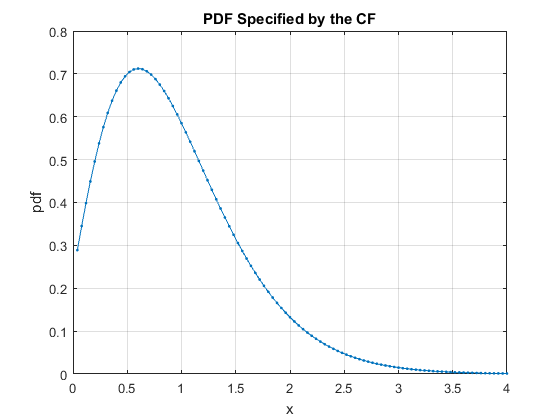 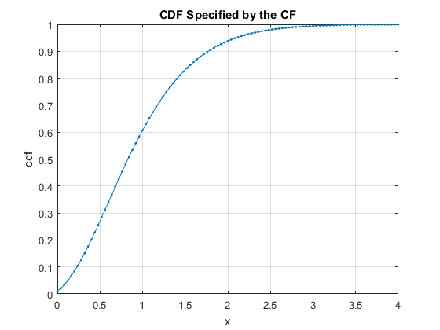 GENERALIZED POISSON DISTRIBUTION
cfN_GeneralizedPoisson(t,a,p) evaluates the characteristic function cf(t) of the Generalized-Poisson distribution, with the parameters a (parameter of variable mean, a > 0), and p (success probability, p in [0,1]), i.e.
cf(t) = cfN_GeneralizedPoisson(t,a,p) = exp(a*(sum_{j=1}^Inf ((p*j)^(j-1)*e^(-p*j)/j!)*e^(1i*t*j)-1));
The Generalized-Poisson distribution is equivalent with the Borel-Tanner distribution with parameters (p,m), see WIMMER and ALTMANN (1999), where m ~ Poisson(a).
cfN_GeneralizedPoisson(t,a,p,cfX) evaluates the compound characteristic function
cf(t) = cfN_GeneralizedPoisson(-1i*log(cfX(t)),a,p),
where cfX is function handle of the characteristic function cfX(t) of a continuous distribution and/or random variable X.
SYNTAX * cf = cfN_GeneralizedPoisson(t,a,p) * cf = cfN_GeneralizedPoisson(t,a,p,cfX)
II.3.a EXAMPLE: CF of the GeneralizedPoisson distribution, a=10, p=0.5
a = 10;
p = 0.5;
t = linspace(-10,10,501);
cf = cfN_GeneralizedPoisson(t,a,p);
figure; plot(t,real(cf),t,imag(cf)),grid
title('CF of the Generalized-Poisson distribution with a=10, p=0.5')
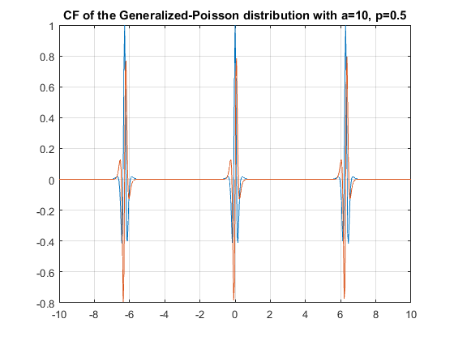 II.3.b EXAMPLE: CF compound GeneralizedPoisson-Exponential distribution
a = 10;
p = 0.5;
lambda = 5;
t = linspace(-5,5,501);
cfX = @(t) cfX_Exponential(t,lambda);
cf = cfN_GeneralizedPoisson(t,a,p,cfX);
figure; plot(t,real(cf),t,imag(cf)),grid
title('CF compound Generalized-Poisson-Exponential distribution')
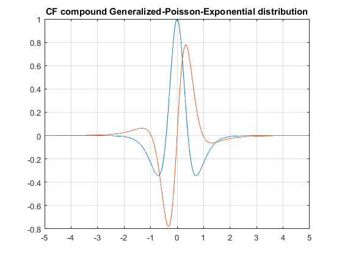 II.3.c EXAMPLE: PDF/CDF of the compound GeneralizedPoisson-Exponential distribution
a = 10;
p = 0.5;
lambda = 5;
x = linspace(0,15,101);
prob = [0.9 0.95 0.99];
cfX = @(t) cfX_Exponential(t,lambda);
cf = @(t) cfN_GeneralizedPoisson(t,a,p,cfX);
clear options
options.isCompound = true;
result = cf2DistGP(cf,x,prob,options);
disp(result)
x: [1×101 double]
cdf: [1×101 double]
pdf: [1×101 double]
prob: [0.9000 0.9500 0.9900]
qf: [6.6698 7.7150 9.9450]
SixSigmaRule: 10
N: 16384
dt: 0.2618
T: 4.2895e+03
PrecisionCrit: 3.7415e-11
myPrecisionCrit: 1.0000e-12
isPrecisionOK: 0
xMean: 4.0002
xStd: 1.9999
xMin: 0
xMax: 23.9988
cf: @(t)cfN_GeneralizedPoisson(t,a,p,cfX)
const: 4.5400e-05
isCompound: 1
isCircular: 0
details: [1×1 struct]
options: [1×1 struct]
tictoc: 0.0022
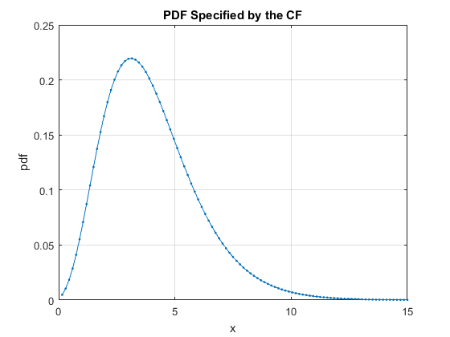 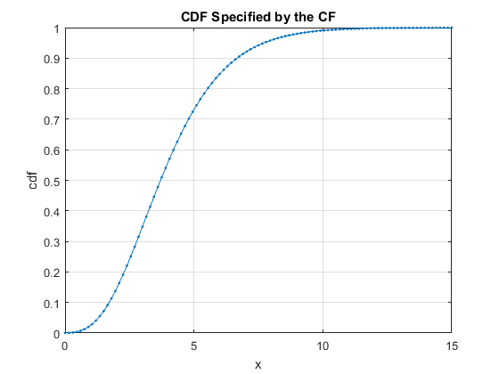 NEGATIVE BINOMIAL DISTRIBUTION
cfN_NegativeBinomial(t,r,p) evaluates the characteristic function cf(t) of the Negative-Binomial distribution with the parameters r ( number of failures until the experiment is stopped, r in N) and p (success probability in each experiment, p in [0,1]), i.e.
cf(t) = cfN_NegativeBinomial(t,r,p) = p^r * (1 - (1-p) * e^(1i*t))^(-r);
For more details see WIMMER and ALTMANN (1999), also WIKIPEDIA: https://en.wikipedia.org/wiki/Negative_binomial_distribution
SYNTAX:
- cf = cfN_NegativeBinomial(t,r,p)
- cf = cfN_NegativeBinomial(t,r,p,cfX)
II.4.a EXAMPLE: CF of the NegativeBinomial distribution, r = 5, p = 0.3
r = 5;
p = 0.3;
t = linspace(-15,15,1001);
cf = cfN_NegativeBinomial(t,r,p);
figure; plot(t,real(cf),t,imag(cf)),grid
title('CF the Negative Binomial distribution with r = 5, p = 0.3')
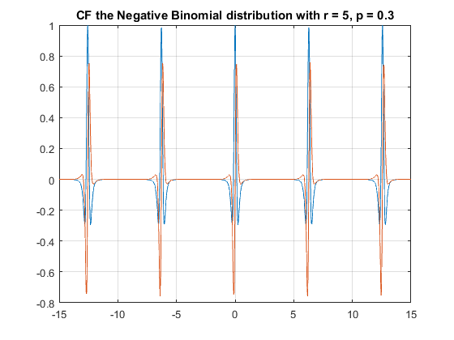 II.4.b EXAMPLE: PDF/CDF of the compound NegativeBinomial-Exponential distribution
r = 5;
p = 0.3;
lambda = 5;
cfX = @(t) cfX_Exponential(t,lambda);
cf = @(t) cfN_NegativeBinomial(t,r,p,cfX);
x = linspace(0,10,101);
prob = [0.9 0.95 0.99];
clear options
options.isCompound = true;
result = cf2DistGP(cf,x,prob,options);
disp(result)
x: [1×101 double]
cdf: [1×101 double]
pdf: [1×101 double]
prob: [0.9000 0.9500 0.9900]
qf: [4.2473 5.0082 6.6237]
SixSigmaRule: 10
N: 16384
dt: 0.3801
T: 6.2277e+03
PrecisionCrit: 5.4957e-10
myPrecisionCrit: 1.0000e-12
isPrecisionOK: 0
xMean: 2.3390
xStd: 1.4191
xMin: 0
xMax: 16.5300
cf: @(t)cfN_NegativeBinomial(t,r,p,cfX)
const: 0.0024
isCompound: 1
isCircular: 0
details: [1×1 struct]
options: [1×1 struct]
tictoc: 0.0021
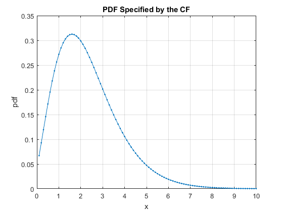 POISSON DISTRIBUTION
cfN_Poisson(t,lambda) evaluates the characteristic function cf(t) of the Poisson distribution with the rate parameter lambda > 0, i.e.
cf(t) = cfN_Poisson(t,lambda) = exp(lambda*(e^(1i*t)-1))
For more details see WIMMER and ALTMANN (1999), also WIKIPEDIA: https://en.wikipedia.org/wiki/Poisson_distribution.
cfN_Poisson(t,lambda,cfX) evaluates the compound characteristic function
cf(t) = cfN_Poisson(-1i*log(cfX(t)),lambda),
where cfX is function handle of the characteristic function cfX(t) of a continuous distribution and/or random variable X.
SYNTAX:
- cf = cfN_Poisson(t,lambda)
- cf = cfN_Poisson(t,lambda,cfX)
II.5.a EXAMPLE: CF of the Poisson distribution with lambda = 10
lambda = 10;
t = linspace(-10,10,501);
cf = cfN_Poisson(t,lambda);
figure; plot(t,real(cf),t,imag(cf)),grid
title('Characteristic function of the Poisson distribution')
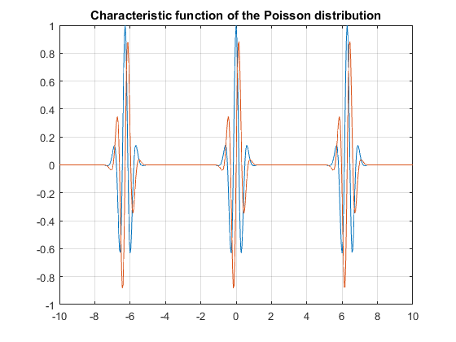 II.5.b EXAMPLE: CF compound Poisson & Exponential distribution
lambda1 = 10;
lambda2 = 5;
t = linspace(-10,10,501);
cfX = @(t) cfX_Exponential(t,lambda2);
cf = cfN_Poisson(t,lambda1,cfX);
figure; plot(t,real(cf),t,imag(cf)),grid
title('CF compound Poisson & Exponential distribution')
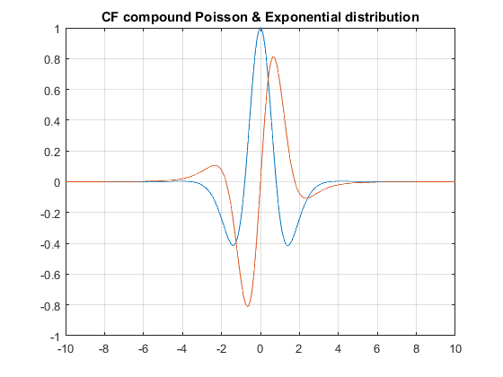 II.5.c EXAMPLE: PDF/CDF of the compound Poisson-Exponential distribution
lambda1 = 10;
lambda2 = 5;
cfX = @(t) cfX_Exponential(t,lambda2);
cf = @(t) cfN_Poisson(t,lambda1,cfX);
x = linspace(0,8,101);
prob = [0.9 0.95 0.99];
clear options
options.isCompound = true;
result = cf2DistGP(cf,x,prob,options);
disp(result)
x: [1×101 double]
cdf: [1×101 double]
pdf: [1×101 double]
prob: [0.9000 0.9500 0.9900]
qf: [3.1965 3.6245 4.4988]
SixSigmaRule: 10
N: 16384
dt: 0.5741
T: 9.4068e+03
PrecisionCrit: 1.2827e-11
myPrecisionCrit: 1.0000e-12
isPrecisionOK: 0
xMean: 2.0001
xStd: 0.8943
xMin: 0
xMax: 10.9436
cf: @(t)cfN_Poisson(t,lambda1,cfX)
const: 4.5400e-05
isCompound: 1
isCircular: 0
details: [1×1 struct]
options: [1×1 struct]
tictoc: 0.0020
 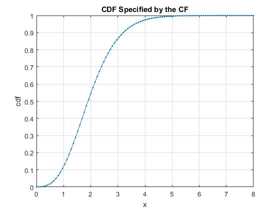
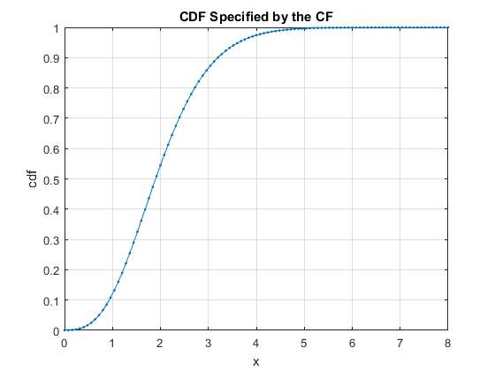 POLYA-EGGENBERGER DISTRIBUTION
cfN_PolyaEggenberger(t,a,b,m) evaluates the characteristic function cf(t) of the Polya-Eggenberger distribution, with the parameters a (a real), b (b real), and m (m integer), i.e.
cf(t) = cfN_PolyaEggenberger(t,a,b,m) = 2F1(-m,a,a+b,1-e^(1i*t));
where 2F1 denotes the Gauss hypergeometric function. For more details see WIMMER and ALTMANN (1999), p. 525.
SYNTAX:
- cf = cfN_PolyaEggenberger(t,a,b,m)
- cf = cfN_PolyaEggenberger(t,a,b,m,cfX)
II.6.a EXAMPLE: CF of PolyaEggenberger distribution, a=2.2, b=3.3, m=4
a = 2.2;
b = 3.3;
m = 4;
t = linspace(-15,15,1001);
cf = cfN_PolyaEggenberger(t,a,b,m);
figure; plot(t,real(cf),t,imag(cf)),grid
title('CF of the PolyaEggenberger distribution with a=2.2, b=3.3, m=4')
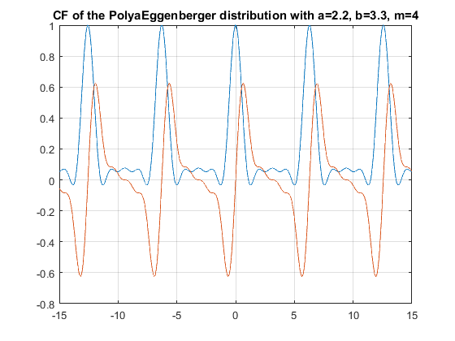 II.6.b EXAMPLE: CF of the compound PolyaEggenberger-Exponential distribution
a = 2.2;
b = 3.3;
m = 4;
lambda = 5;
cfX = @(t) cfX_Exponential(t,lambda);
t = linspace(-50,50,501);
cf = cfN_PolyaEggenberger(t,a,b,m,cfX);
figure; plot(t,real(cf),t,imag(cf)),grid
title('CF of the compound PolyaEggenberger-Exponential distribution')
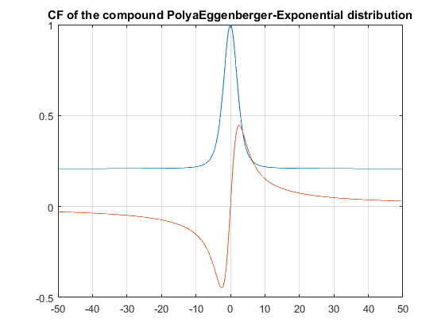 II.6.c EXAMPLE: PDF/CDF of the compound PolyaEggenberger-Exponential distribution
a = 2.2;
b = 3.3;
m = 4;
lambda = 5;
cfX = @(t) cfX_Exponential(t,lambda);
cf = @(t) cfN_PolyaEggenberger(t,a,b,m,cfX);
x = linspace(0,2.5,101);
prob = [0.9 0.95 0.99];
clear options
options.isCompound = true;
result = cf2DistGP(cf,x,prob,options);
disp(result)
x: [1×101 double]
cdf: [1×101 double]
pdf: [1×101 double]
prob: [0.9000 0.9500 0.9900]
qf: [0.7982 1.0106 1.4670]
SixSigmaRule: 10
N: 16384
dt: 1.6384
T: 2.6843e+04
PrecisionCrit: 1.2720e-09
myPrecisionCrit: 1.0000e-12
isPrecisionOK: 0
xMean: 0.4040
xStd: 0.3431
xMin: 0
xMax: 3.8350
cf: @(t)cfN_PolyaEggenberger(t,a,b,m,cfX)
const: 0.2079
isCompound: 1
isCircular: 0
details: [1×1 struct]
options: [1×1 struct]
tictoc: 0.0020
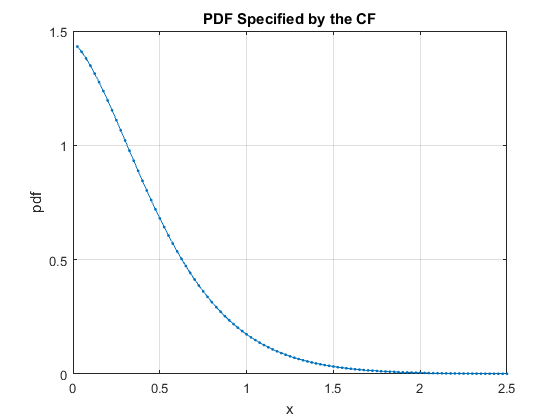 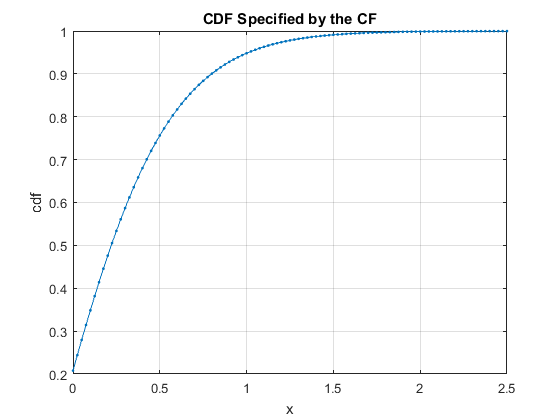 QUINKERT DISTRIBUTION
cfN_Quinkert(t,a,b) evaluates the characteristic function cf(t) of the Quinkert distribution, with the parameters a (a > 0) and b (b > 0), i.e.
cf(t) = cfN_Quinkert(t,a,b) = 1F1(a,a+b,e^(1i*t)-1);
where 1F1 denotes the confluent hypergeometric (Kummer's) function. For more details see WIMMER and ALTMANN (1999), p. 564.
SYNTAX:
- cf = cfN_Quinkert(t,a,b)
- cf = cfN_Quinkert(t,a,b,cfX)
II.7.a EXAMPLE: CF of the Quinkert distribution with a=3, b=5
a = 3;
b = 5;
t = linspace(-15,15,501);
cf = cfN_Quinkert(t,a,b);
figure; plot(t,real(cf),t,imag(cf)),grid
title('CF of the Quinkert distribution with a = 3, b = 5')
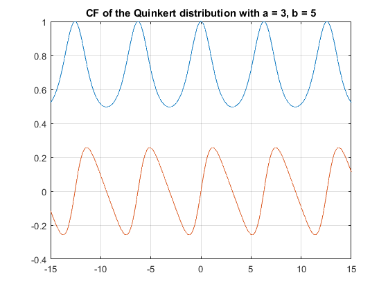 II.7.b EXAMPLE: CF of the compound Quinkert-Exponential distribution
a = 3;
b = 5;
lambda = 5;
cfX = @(t) cfX_Exponential(t,lambda);
cf = @(t) cfN_Quinkert(t,a,b,cfX);
t = linspace(-15,15,501);
figure; plot(t,real(cf(t)),t,imag(cf(t))),grid
title('CF of the compound Quinkert-Exponential distribution')
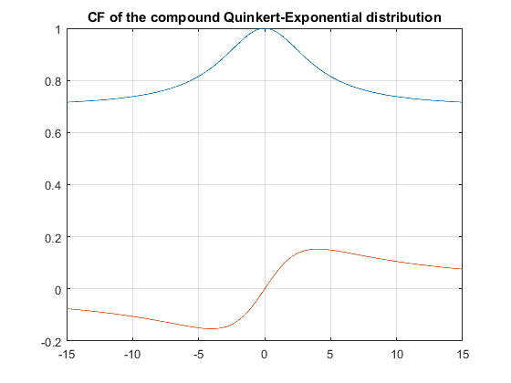 II.7.c EXAMPLE: PDF/CDF of the compound Quinkert-Exponential distribution
a = 3;
b = 5;
lambda = 5;
cfX = @(t) cfX_Exponential(t,lambda);
cf = @(t) cfN_Quinkert(t,a,b,cfX);
x = linspace(0,1.5,101);
prob = [0.9 0.95 0.99];
clear options
options.isCompound = true;
result = cf2DistGP(cf,x,prob,options);
disp(result)
x: [1×101 double]
cdf: [1×101 double]
pdf: [1×101 double]
prob: [0.9000 0.9500 0.9900]
qf: [0.2755 0.4456 0.8363]
SixSigmaRule: 10
N: 16384
dt: 2.3348
T: 3.8253e+04
PrecisionCrit: 1.3686e-09
myPrecisionCrit: 1.0000e-12
isPrecisionOK: 0
xMean: 0.2468
xStd: 0.2444
xMin: 0
xMax: 2.6912
cf: @(t)cfN_Quinkert(t,a,b,cfX)
const: 0.6961
isCompound: 1
isCircular: 0
details: [1×1 struct]
options: [1×1 struct]
tictoc: 0.0019
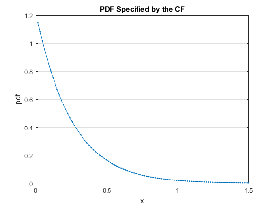 
WARING DISTRIBUTION
cfN_Waring(t,a,b,r) evaluates the characteristic function cf(t) of the Waring distribution, with the parameters a (a > 0), b (b > 0), and r (r > 0), i.e.
|cf(t) = cfN_Waring(t,a,b,r)
= ((gamma(a+r)*gamma(a+b)) / (gamma(a)*gamma(a+b+r)))
* 2F1(r,b,a+b+r,e^(1i*t))|;where 2F1 denotes the Gauss hypergeometric function. The Waring distribution is also known as beta negative binomial distribution. For more details see WIMMER and ALTMANN (1999), p. 643, and also WIKIPEDIA: https://en.wikipedia.org/wiki/Beta_negative_binomial_distribution
SYNTAX:
- cf = cfN_Waring(t,a,b,r)
- cf = cfN_Waring(t,a,b,m,cfX)
II.8.a EXAMPLE: CF of the Waring distribution, a = 2.2, b = 3.3, r = 4
a = 2.2;
b = 3.3;
r = 4;
t = linspace(-5,5,1001);
cf = cfN_Waring(t,a,b,r);
figure; plot(t,real(cf),t,imag(cf)),grid
title('(CF of the Waring distribution with a = 2.2, b = 3.3, r = 4')
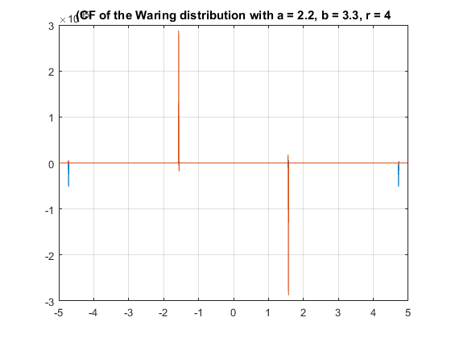 II.8.b EXAMPLE: CF of the compound Waring-Exponential distribution
a = 2.2;
b = 3.3;
r = 4;
lambda = 5;
cfX = @(t) cfX_Exponential(t,lambda);
t = linspace(-10,10,501);
cf = cfN_Waring(t,a,b,r,cfX);
figure; plot(t,real(cf),t,imag(cf)),grid
title('CF of the compound Waring-Exponential distribution')
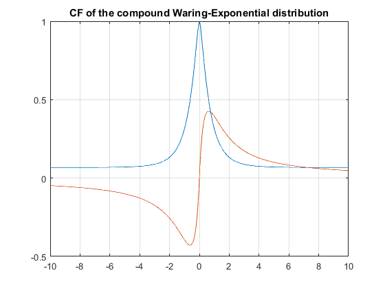 II.8.c EXAMPLE: PDF/CDF of the compound Waring-Exponential distribution
a = 2.2;
b = 3.3;
r = 4;
lambda = 5;
cfX = @(t) cfX_Exponential(t,lambda);
cf = @(t) cfN_Waring(t,a,b,r,cfX);
x = linspace(0,35,101);
prob = [0.9 0.95 0.99];
clear options
options.isCompound = true;
result = cf2DistGP(cf,x,prob,options);
disp(result)
x: [1×101 double]
cdf: [1×101 double]
pdf: [1×101 double]
prob: [0.9000 0.9500 0.9900]
qf: [4.8876 7.4685 18.0193]
SixSigmaRule: 10
N: 16384
dt: 0.1018
T: 1.6685e+03
PrecisionCrit: 9.0272e-08
myPrecisionCrit: 1.0000e-12
isPrecisionOK: 0
xMean: 2.3591
xStd: 5.9340
xMin: 0
xMax: 61.6991
cf: @(t)cfN_Waring(t,a,b,r,cfX)
const: 0.0675
isCompound: 1
isCircular: 0
details: [1×1 struct]
options: [1×1 struct]
tictoc: 0.0022
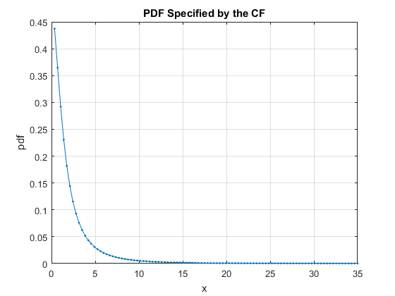 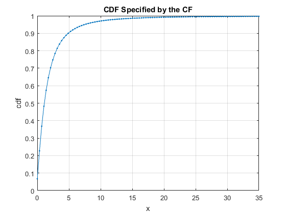